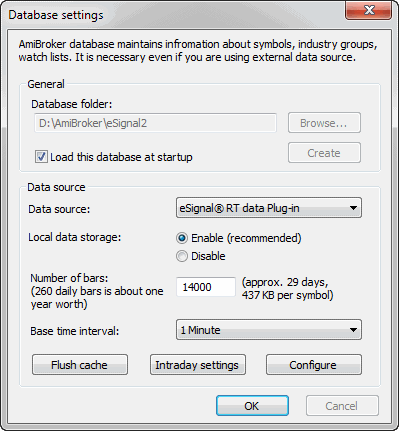
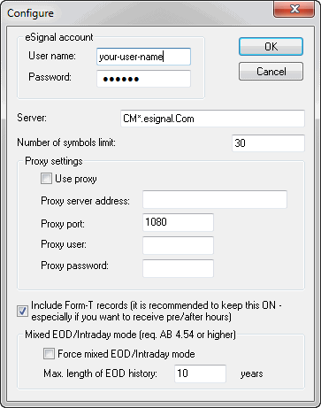

How to set up AmiBroker with eSignal feed (RT version only)
Requirements
IMPORTANT: You must have the eSignal application installed on your machine
and a valid eSignal subscription.
One-time setup
To use AmiBroker with eSignal feed you will need to perform a one-time setup
described below:
- Run AmiBroker
- Choose File->New database
- Type a new folder name (for example: C:\Program Files\AmiBroker\eSignal
) and click Create as shown in the picture below:

- Choose eSignal RT Data Plug-in from the 'Data source' combo and "Enable"
from 'Local data storage'
- Enter appropriate number of bars to load:
90000 for 1-minute database combined with long history daily database
- Click the Configure button to show the plug-in configuration dialog as
shown below

Enter your eSignal username and password here (if you have eSignal properly installed,
AmiBroker will pre-set these fields to the username and password entered in the eSignal software).
You may also adjust the Number of symbols. This should not exceed your
account limit, and you may consider lowering this value if you want to use
AmiBroker in parallel with another data manager client application. (If you
exceed the limit of your subscription, AmiBroker will re-adjust this number
down.)
Click OK
- Now, choose Base periodicity. Note that the recommended periodicity
is 1 minute,
but you can select all base periods starting from 'tick' up to hourly.
Note that selecting 'tick', 1-second, 5-second, or 15-second periodicities
will cause the transmission of huge amounts of data from eSignal servers (for
an actively
traded
security, it can be several megabytes for just one symbol and very few days
of history). If you have a modem connection, this setting is highly discouraged.
You should also consider using 1-second bars instead of pure 'ticks', since
this mode is faster.
Also, note that to get long end-of-day histories together with intraday data,
you should go to File->Database Settings->Intraday Settings and turn ON "Allow
mixed EOD/intraday data" option.
- Click OK.
From now on, your AmiBroker reads quotes directly from eSignal.
To learn how to use AmiBroker in real-time mode, read this
tutorial article.